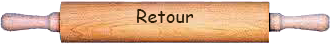

Comment retirer du jaune d’œuf tombé dans le blancLa méthode la plus efficace👉 Utilise une demi-coquille d’œuf Prends un morceau de coquille vide Autres astuces qui peuvent aider 1) Une petite cuillère : fonctionne si le jaune est encore bien intact Important à savoir Même une toute petite trace de jaune empêche les blancs de monter correctement (surtout pour meringues, macarons, etc.). | |||
|  | |||
|---|---|---|---|